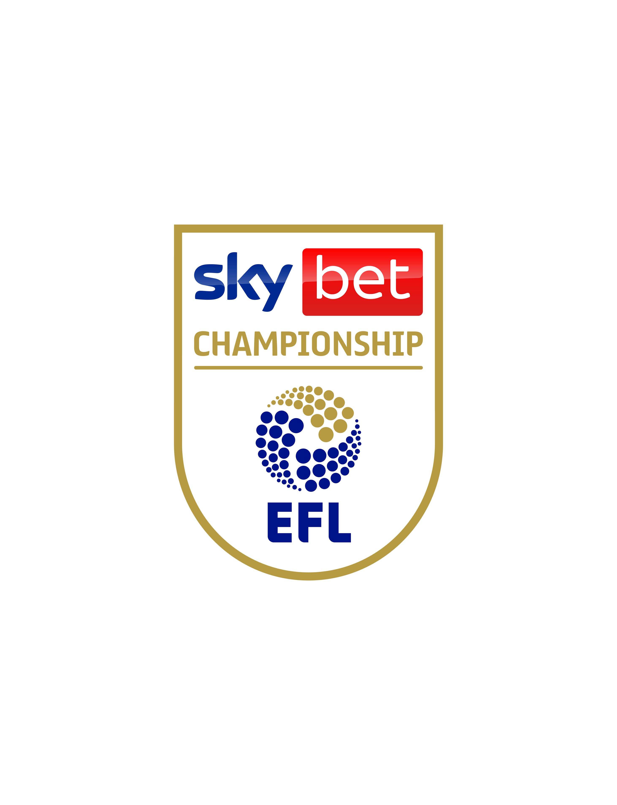

Wrexham AFC · FC26 Career
Season 2025–26
All Competitions
0 Played

EFL Championship

Carabao Cup
Match Journal
The Red Dragon
Chronicles
Match reports, post-game thoughts, and narrative dispatches — every game documented.
Manager Profile
Keevyon
Jenkins
Playing career, coaching history, tactical identity, and the backstory behind The Hawk.
Coaching Tools
Squad
Depth Chart
4-2-3-1 formation view, position-by-position depth, youth pipeline, and window priorities.
Development
Youth
Academy
Scouted prospects, academy squad, development plans, and first-team promotions.
Squad Overview
Full
Roster
All 36 senior players and 6 academy prospects — Summary stats, ratings, development status, and squad roles.
Season Log
No entries yet — season begins with the first kick-off.